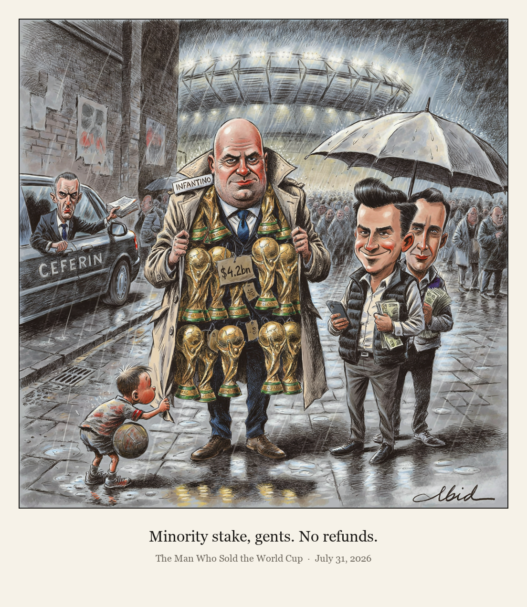

The Man Who Sold the World Cup

FIFA has announced plans for a $20bn subsidiary, FIFA Forward Enterprise, that would sell minority stakes in future World Cups and other events to private investors to raise up to $4.2bn, with an investor group led by Thrive Eternal, the venture firm founded by Joshua Kushner. UEFA condemned the proposal and floated boycotting FIFA competitions, CONCACAF said it was never consulted, and any change would require a vote of FIFA's 211 member associations.